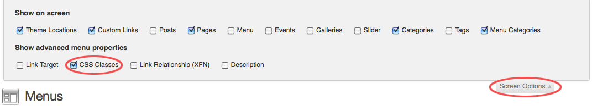
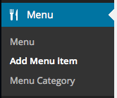

LEMONCHILI
Premium WordPress Theme for Restaurants, Bars, Cafes, Clubs, Events
by red_sun (Gerda Gimpl)
Hi there... thank you for purchasing LemonChili, a premium WordPress theme for Restaurants, Bars, Cafes, Clubs, Events
In this document you will find detailed information on how to use this theme.You can always find the most up to date version of this document in the Theme Options panel, right top corner.
If you have any questions
If you don't find the answers for your questions in this help file, please send me a message via my user page contact form (this is the only way I can verify legitimate customers).
I will do my best to assist with questions directly related to the theme set up, however please note that theme support is completely voluntary for ThemeForest authors and we do it as appreciation to our customers. Therefore before you contact me, please consider finding an answer to your question in:
- The relevant section of the documentation
- WordPress Codex and WPtuts+ WP101 tutorial series for general WordPress questions
- Google for general questions
If you like "LemonChili" and want to support my work please rate it on Themeforest!
Thank you!
Installation
Please make sure that you are using the latest version of Wordpress before you install "LemonChili".
Information on how to install Wordpress you can find here .
There are 2 ways to upload the theme:
method 1: wordpress upload function
- Login to your WordPress admin
- Click Appearance >Themes
- Click Add New
- Click Upload Theme, browse your files and find lemonchili.zip (Make sure you are not uploading the whole zip file that you've downloaded from Themeforest (including dummy content, license, psd files, readme ...)
- Click Install Now
- Once LemonChili is uploaded, click Activate
method 2: FTP upload
- Unpack the Theme's zip file you have downloaded
- Upload the /lemonchili folder to the /wp-content/themes directory in your WordPress installaion on your server
- Login to your WordPress admin
- Click Appearance >Themes
- Look for the LemonChili theme and click Activate
The Theme Options Panel
Once the theme is installed, a new menu page called "Theme Options" will appear on the bottom left of your WordPress administration area.
The Theme Options Panel is divided into the following sections:
GENERAL - Configure the general setup of your theme. Here you can - load the responsive stylesheets, - upload a logo, login logo, favicon and a gravatar, - add custom CSS, a 404 error message and a google analytics code, - choose the copyright text color, make the left area "scrollable", display a search bar, show author info and tags and - remove all comments from the entire website.
STYLE - Choose light or dark skin, set a background image or color, add or remove box shadow and rounded corners.
TYPOGRAPHIE - Select your favorite font or upload one of hundreds of Google Web fonts. This applies to headings, page title, widget title, navigation, slider caption, event date, price and button text.
COLOR - Set the theme color.
SLIDER - Set up your slider.
SOCIAL - Enter your info for your social network accounts to display them below the navigation or in the Top Bar.
CONTACT - Enter the contact info for the Top Bar and the settings for your Contact Form.
Demo Content
If you want a quick start you can import the content from the LemonChili demo site (images are replaced with dummy images).How to install the demo content
- Click Tools > Import
- Click on WordPress
- Install the Importer by clicking Install Now and then Activate Plugin & Run Importer
- Upload the xml file called "LemonChili dummy content (date).xml", that you can find in the folder "dummy content".
- Now assign your posts to an existing user, check the "Download and import file attachments" checkbox and click "Submit".
Recommended next steps
- Go to Appearance > Menus, select "myMenu", scroll down and under Menu Settings > Theme locations, check LemonChili Main Menu and click Save Menu.
- Go to Settings > Reading and select Front page displays a "static page".Front page: "Home".Posts page: "The Latest".
- In order for the food and drink menu pages to display menu items you will need to select a menu category for each page first: Go to Pages > All Pages, select a Menu page, select menu category in the bottom left corner and click Update.
Recommended Plugins
SORT MENU CATEGORIES AND MENU ITEMS (and team members)Intuitive Custom Post Order
This plugin can be installed by simply going to Appearance > Install Plugins.
Once the plugin is installed, go to Settings > Intuitive CPO, check the Post Types and Categories that you wish to reorder and click Update.
Now you can drag and drop the menu categories, menu items, team members, etc. into a certain order.
In order to display menu items from a certain menu category only, which helps to reorder them, select a menu category and click Filter
In order to display all menu items on 1 page, which also helps to reorder them, in the top right corner click "Screen Options" and enter a number at least as high as the total number of items you've created.
Menu
Create a Menu
- Click Appearance > MENUS
- Click create a new menu .
- Enter a name for your menu and click Create Menu.
- In Menu Settings select "LEMONCHILI Main Menu" and click Save Menu.
- Select menu items from the left column and click "Add to Menu".
- Click on the drop down arrow of a menu item to change the navigation label or if you want to open the menu item in a new window
- Click "Sceen Options" in the top right corner for more options.

How to create an "unclickable" parent menu item
LemonChli includes CSS styles for an "unclickable" parent menu item (just a heading for a submenu, not a link. This menu item will be unclickable and the color will not change on mouse-over.)
This is how you create it:
- Go to Appearance > MENUS, click on Screen Options in the top right corner and check the CSS classes checkbox. 
- Create a custom link and add it to the menu.
- Remove URL and add in the field CSS Classes enter: unclickable
- Click Save Menu.
Pages
Custom Page Templates
The theme comes with the following custom Page Templates:
- Default Template - The default page.
- Home Template - A fully widgetized page that displays the slider up top.
- Menu 1 Column Template - A page to display the food and drinks menu (1 column).
- Menu 2 Columns Template - A page to display the food and drinks menu (2 columns).
- Menu 3 Columns Template - A page to display the food and drinks menu (3 columns).
- Gallery Template - A page to display an image gallery.
- Team Template - A page to display the team.
- Events 1 Column Template - A page to display upcoming events (1 column).
- Events 2 Columns Template - A page to display upcoming events (1 columns).
- Contact Template - A page similar to the Default Template but additionally containing a contact form.
How to use a template:
- Click Pages > Add New.
- Look for Page Attributes on the right side and click on the "Template" drop-down menu.
- Choose a page template.
- Click the Publish button above.
- Now you can add your new page to your Menu.
Setting up the Homepage
- Click Pages > Add New.
- Look for Page Attributes on the right side and click on the Template drop-down menu. Select the "Home" template.
- You can give this page a title, eg. "Home". You don't have to include any content. If you enter some content, it will be displayed above the widgets section.
- Click Publish.
- Now you can add the new page to your menu.
- Now click Settings > Reading and select Front page displays a static page. Select the page you just created as your Front page and click Save Changes.
- The Homepage is fully widgetized. Simply go to Appearance > Widgets and add any widgets to "sidebar home".
Adding a slideshow to the homepage
- Click Slider > Add Slider
- Enter a title for your slider so you can choose it later in the Theme Options Panel.
- Upload images. Image must be 700x340px. Drag and drop images to reorder them. To enter an URL where the image should link to, click Edit and enter the full URL under SLIDER Image Links To. To display a caption over the slider image,click Edit and enter the text under SLIDER Caption.
- Click Publish
- Now in the Theme Options Panel click Slider and check Show Slider on Homepage
- Select a slider from the dropdown list.
- Click Save Options

NOTE!: The Slider will only display on the page that is using the "Home" template. Please make sure you are following all the instructions in the documentation under "Setting up the Homepage" (especially step 6!)
Setting up the Menu Pages
STEP 1: CREATE MENU CATEGORIES
- Click Menu > Menu Category.
- Create new menu categories (for example: main dishes, wine,...) by filling in the name, slug and optionally the description (will be diplayed below the menu category name) and clicking Add new Menu Category.
STEP 2: CREATING MENU PAGES
- Click Pages > Add New.
- Look for Page Attributes on the right side and click on the Template drop-down menu. Select either the "Menu 1 column", the "Menu 2 columns" or the "Menu 3 columns" template.
- You can give this page a title, eg. "Menu" or "Drinks". You don't have to include any content.
- Click Publish.
- Now after clicking "Publish", a new Meta box will apear on the page, which displays all the menu categories that you've created in STEP 1:
- Select the menu categories that you would like to display on this page and click Update.
- Now you can add the new page to your menu.
- If you would like to display multiple menu categories within 1 menu page and would like to display the categories in a certain order, Install the Intuitive Custom Post Order plugin. You can do that in Appearance > Install Plugins.
STEP 3: CREATING MENU ITEMS
- Click Menu > Add Menu Item 
- Enter Title, Menu Item Description, price (including currency symbol) and select a Menu Category.
- Click Publish
- If you would like to reorder menu items via drag and drop, install the Intuitive Custom Post Order plugin.
You can do that in Appearance > Install Plugins.
In order to display menu items from a certain menu category only, which helps to reorder them, select a menu category and click Filter
In order to display all menu items on 1 page, which also helps to reorder them, in the top right corner click "Screen Options" and enter a number at least as high as the total number of items you've created.
Setting up the News Page
- Click Pages > Add New.
- Look for Page Attributes on the right side and click on the Template drop-down menu. Select the "Default Template".
- You can give this page a title, eg. "News". You don't have to include any content.
- Click Publish.
- Now you can add the new page to your menu .
- Now click Settings > Reading and select Front page displays a static page. Select the page you just created as your Posts page and click Save Changes.
- Click Posts > Add New to create a news post.
Setting up the Gallery Page
- Click Pages > Add New.
- Look for Page Attributes on the right side and click on the Template drop-down menu. Select the "Gallery" template.
- You can give this page a title, eg. "Images". You don't have to include any content.
- Click Publish.
- Now you can add the new page to your menu.
- Click Gallery > Add Gallery
- Enter a Title
- Click Set featured image
- Select a file and click Set featured image
- Click Publish
- Now upload your images. Drag and drop images to reorder them.
- If you would like to display a caption in the prettyPhoto lightbox, click Edit and enter the text in the field Caption.
- Click Update. Done!

NOTE!: If you are getting the 404 Error when clicking on a gallery item on the gallery page or in the gallery widget: Simply go to Settings > Permalinks and click "Save Changes".
Setting up the Events Page
- Click Pages > Add New.
- Look for Page Attributes on the right side and click on the Template drop-down menu. Select the "Events 1 column" or "Events 2 columns" template.
- You can give this page a title, eg. "Events". You don't have to include any content.
- Click Publish.
- Now you can add the new page to your menu.
- Click Events > Add Date
- Enter Title, date (datepicker!) and optionally end-date, time, end-time, description and set a featured image.
- In order to display a "view details" button, use the More Tag button.
- Click Publish
- Repeat step 6. - 9. for each date.
Setting up the Team Page
- Click Pages > Add New.
- Look for Page Attributes on the right side and click on the Template drop-down menu. Select the "Team" template.
- You can give this page a title, eg. "Team". You don't have to include any content.
- Click Publish.
- Now you can add the new page to your menu.
- Click Team > Add Team Member
- Enter Title, Name, Position, Email, About and set a featured image.
- Click Publish
- Repeat step 6. - 8. for each team member.
Setting up the Contact Page
- Click Pages > Add New.
- Look for Page Attributes on the right side and click on the Template drop-down menu. Select the "Contact" template.
- You can give this page a title, eg. "Contact". The contact form will automatically insert below any page content.
- In order to display the contact info similar to the demo contact page, simply use the column shortcodes.
Example: Place the following code into the text (not visual!) editor of the contact page.
[one_third] <h6 style="text-align: center;">LOCATION</h6> <p style="text-align: center;">317 Pacific Coast Highway Huntington Beach, CA 92648</p> [/one_third] [one_third] <h6 style="text-align: center;">TABLE BOOKING</h6> <p style="text-align: center;">(056) 333-4555 booking@lemonchili.com</p> [/one_third] [one_third_last] <h6 style="text-align: center;">GET DIRECTIONS</h6> <p style="text-align: center;">Open <a href="http://goo.gl/maps/976LC" target="_blank"> Google Maps </a></p> [/one_third_last] - Click Publish.
- Now you can add the new page to your menu.
- Click Theme Options > Contact and fill in your email address and the subject.
Icons
Lemonchili includes the "Font Awesome" icon font.
This is how you add an icon to posts, pages, text widgets, widget titles:
- Choose your icon from here Fontawesome
- Add the code as follows (replace "fa-heart" with whatever icon you would like to use):
[fa-heart]
Widgets
Sidebars
LEMONCHILI comes with a fully widgetized homepage.
Simply go to Appearance > Widgets to drag and drop any widgets into the "sidebar home ".Widgets
I added 7 custom widgets to this theme.
- Events Widget
The Events Widget will display the next, upcoming events.
- Featured Dish Widget
Display a featured dish. - Opening Hours
Display the opening hours. - News Widget
Display your latest News Entries. - Gallery Widget
The Gallery Widget will display the featured images of your newest galleries, which link to the single gallery pages.
- Images Widget
The Images Widget will display the first few images of any gallery, which link to the full sized image in a lightbox.
- Flickr Widget
Display pictures from a flickr account.
THEME FILES
CSS
The following CSS files are included in the theme:
Style.css (located in: main direction)
Contains: Foundation for the site design. It controls the design structure of the theme. Be careful modifying this file so that you don't break the layout. I recommend making a copy before you edit this file.
If you would like to edit a specific section of the site, simply find the appropriate label in the CSS file, and then scroll down until you find the appropriate style that needs to be edited.
The file is separated into the following sections:
0. CSS RESET
1. MISC
2. FONTS / TEXT ELEMENTS
3. LAYOUT
4. NAVIGATION
5. SIDEBAR
6. FOOTER
7. WIDGETS
8. IMAGES
9. PAGINATION
10. COMMENTS
11. FORMS
skeleton.css (located in: /css)
Contains: Main layout structure.
layout-responsive.css (located in: /css)
Contains: responsive layout styles
ie8-and-down.css (located in: /css)
Contains: Styles for old Internet explorer
masonry.css (located in: /css)
Contains: Styles for masonry floating boxes
css_options_panel.php (located in: /css)
Contains: Link color, Background image and color, box shadow and fonts as set in Theme Options Panel.
metaboxes.css (located in: /css)
Contains: Style for Meta Boxes
nivoSlider.css (located in: /css)
Contains: Styles for the Homepage slideshow
prettyPhoto.css (located in: /css)
Contains: Styles for the prettyPhoto Lightbox
shortcodes.css (located in: /css)
Contains: Styles for Shortcodes
light.css (located in: /skins/css)
Contains: Color values for light skin
dark.css (located in: /skins/css)
Contains: Color values for dark skin
admin-style.css and colorpicker.css (located in: /includes/admin/css)
Contains: Design structure for the theme options panel. There is probably no need for you to modify this file.
color.css, image.css, plupload-image.css, select.css, style.css, taxonomy.css, wysisyg.css, jquery-ui-timepicker-addon.css, jquery.ui.core.css, jquery.ui.datepicker.css, jquery.ui.slider.css and jquery.ui.theme.css (located in: /includes/metaboxes/css and /includes/metaboxes/css/jqueryui)
Contains: Design structure for the metaboxes. There is probably no need for you to modify this file.
Java Script
"LEMONCHILI" loads the following Javascript files:
backstretch.js (located in: /js)
Fullwidth background image
hoverIntent.js (located in: /js)
Improves the css dropdown menu with animation
jquery-ui-1.8.16.custom.min.js (located in: /js)
jQuery user interface
jquery.masonry.min.js (located in: /js)
Floating Boxes Layout
jquery.selectbox.js (located in: /js)
Responsive menu style
jquery.validitate.min.js (located in: /js)
Form validation for contact page
modernizr-transitions.js (located in: /js)
jQuery animation for masonry floating boxes
nivoSlider.js (located in: /js)
Frontpage slideshow
prettyPhoto.js (located in: /js)
Used to display images and multi-media in a "lightbox" that floats overtop of the current web page.
superfish.js (located in: /js)
Jquery improved dropdown menu
scripts.js (located in: /js)
jQuery functions for superfish, prettyPhoto, Nivo Slider, Contact form, Mosaic sliding boxes, Toggles and Tabs
colorpicker.js , ofmedialibrary-uploader.js ,options-custom.js ,quicktip_script.js and uislider.js (located in: /includes/admin/js)
Used for the Theme Options Panel
clone.js , color.js , date.js , datetime.js , tile.js , image.js , plupload-image.js , slider.js , taxonomy.js , time.js , jquery-ui-timepicker-addon.js , jquery.ui.datepicker.min.js and jquery.ui.slider.min.js (located in: /includes/metaboxes/js and /includes/metaboxes/js/jqueryui)
Used for the custom Meta Boxes
SHORTCODES
Using shortcodes is very easy. To use one, create a new post (or edit an existing one), and in the the editor type a shortcode in brackets. You can find a demonstration and the code for all included shortcodes on the Shortcodes page.
Button
[button link="http://www.someURL.com"]Click me![/button]
Tabs
[tabs]
[tab title="Tab 1"] Tab 1 content [/tab]
[tab title="Tab 2"] Tab 2 content [/tab]
[tab title="Tab 3"] Tab 3 content [/tab]
[/tabs]
Toggle
[toggle title="Toggle title"]
Hidden content
[/toggle]
Dropcaps
[dropcap] First Letter [/dropcap]
Highlight
[highlight1] highlighted text [/highlight1]
[highlight2] highlighted text [/highlight2]
Pullquotes
[pullquote_left] Quote text [/pullquote_left]
[pullquote_right] Quote text [/pullquote_right]
Credits
I've used the following scripts, files, images, icons and other files in this theme:
Changelog
Version 3.0 - Released: 06/12/2017- folder: widgets and all files within - Fixed: PHP7 ready
- folder: metabox and all files within - Added: Newest version of the Metabox script
- file: functions.php, header.php, footer.php - Added: Support for background image and background color in WordPress Customizer
- file: header.php, css_options_panel.php - Added: Option to make top bar scrollable
- file: contact.php, searchform.php - Added: Sanitize user input
- folder: fontawesome and all files within - Added: Newest version of FontAwesome icon font
- folder: tgm-plugin-activation and all files within - Added: latest version of TGM Plugin Activation
- file: mobile_dect.php - Added: latest version of mobile detect script
- file: header.php, functions.php - Added: better way to include Google fonts
- file: functions.php - Fixed: child theme ready
- folder: meta-boxes and all files within - Added: newest version of the metabox script. Fixed: slider images and gallery images uploader.
- folder: meta-boxes and all files within, file: functions.php, slider.php, single-audio.php - Added: newest version of the metabox script, Fixed: Error when uploading new slider or gallery images in WP 4.5.
- file: tgm-activation.php - Added: replaced plugin recommendation
- file: functions.php - Added: code improvements
- folder: widgets and all files within - Fixed: deprecated function
- folder: fontawesome and all files within, files: functions.php - Added: Font Awesome icon font update 4.4
- file: single-gallery.php, widget-images.php, pretty-photo.js - Fixed: image caption and prev/next button in lightbox.
- file: theme_functions.php - Added: Filter for Menu categories.
- file: widget-events.php - Fixed: Number of items displayed in events widget
- file: prettyPhoto.js - Fixed: prettyPhoto XSS fix.
- file: single-menu.php, style.css - Fixed: Price display on single/archive menu pages
- file: header.php - Fixed: Tripadvisor icon in top bar.
- file: class-tgm-plugin-activation.php - Fixed: XSS vulnerability fix.
- file: mobile detect.php - Fixed: isMobile returns true on desktop after Chrome's update.
- file: template-events1.php, layout-responsive.css - Fixed: View Details button of events pages on mobile devices.
- file: nivoSlider.css - Fixed: Slider caption background
- file: retina.php - Fixed: Logo retina display.
- file: single-events.php - Added: support for recurring events on single events pages.
- file: widget-images.php - Added: gallery widget select field
- file: functions.php, header.php, folder: fonts and all files within - Added: neweset version of FontAwesome icon font; Fixed: yelp icon, tripadvisor icon
- file: template-events1.php, template-events2.php, widget-events.php, style.css, light.css, dark.css, config-meta-boxes.php - Added: Option for recurring events / events that will never be removed from the site.
- file: template-menu1.php, template-menu2.php, template-menu3.php, template-team.php, folder: tgm-plugin-activation and all files within - Added: Make theme ready for "Simple Page Ordering" plugin in order to easily sort menu items and team members
- file: options.php, functions.php - Added: Option to change text "Navigation" on mobile devices. Re-added: Navigation icon on mobile devices.
- file: theme-functions.php - Fixed: Login redirect issue.
- file: template-menu2.php, template-menu3.php, widget-featureddish.php - Added: Allow shortcodes in menu item description.
- folder: fonts and all files within - Added: Fontawesome update version 4.1.0
- file: widget-images.php - Fixes: Open full image instead of thumbnail size.
- file: single.php - Fixes: Make "posted in" and "by" translation ready.
- file: functions.php, slider.php - Added: Crop slider images automatically to right size.
- file: options.php, header.php, style.css - Added: Tripadvisor icon, LinkedIn icon, Skype icon.
- file: options.php, css_options_panel.php - Added: Option to select Navigation Menu active/hover color.
- file: functions.php, style.css, scripts.js, imagesloaded.pkgd.min.js, template-contact.php, search.php - Fixed: search page layout, widget area layout on contact page, load slider faster
- file: scripts.js, archive.php - Fixed: load images before masonry script is loaded. Layout of archive page.
- file: jquery.masonry.min.js, scripts.js, index.php, template-home.hp, template-gallery.php, template-events1.php, template-events2.php, template-menu1.php, template-menu2.php, template-menu3.php, template-team.php, style.css, layout-responsive.php, css_options_panel.php - Fixed: WP 3.9 fix.
- file: style.css - Fixed: Alignment of social icons Top Bar
- file: options.php, css_options_panel.php - Added: Color and font size option for Top Bar
- file: functions.php - Added: allow html in category and taxonomy descriptions
- file: style.css - Fixed: Chrome bug (doesn't load Google and Fontawesome fonts on home page)
- file: template-events1.php, template-events2.php, widget-events.php, config-meta-boxes.php - Fixed: Keep Events on on Events page / in Events widget until event end date is over
- file: options.php, css_options_panel.css - Option for team page (2 columns / 3 columns)
- file: widget-images.php - Fixed: Order of images in the "Images Widget"
- file: theme-functions.php - Fixed: comment date
- file: functions.php - Fixed: navigation icon on mobile devices
- folder: metaboxes and all files within, file: slider.php - Added: newest version of the meta box script. Improved image uploader for slider and gallery.
- file: functions.php, header.php, retina.php, css_options_panel.php, css_options_panel_responsive.php - Added: code improvements
- file: retina.php, header.php - Fixed: On retina displays, remove regular logo only if retino logo is uploaded. Bug, where logo would not display in some browsers if no width and height is set in Theme Options Panel.
- folder: fontawesome and all files within, files: theme_functions.php, all template files and single files ... - Added: Icon font Font Awesome update 4.03, icon font shortcode works in posts and titles
- file: template-menu1.php, template-menu2.php, template-menu3.php - Added: text in editor of menu pages appear above menu items
- file: options.php, footer.php - Added: option to display custom copyright text
- file: options.php, header.php - Added: pinterest icon
- file: functions.php, all files within the folder posttypes, options.php, options-framework.php, options-interface.php - Added: child-theme support
- file: style.css - Fixed: iframe height
- file: css_options_panel.php - Fixed: submenu hiding below main content when left area is scrollable
- file: footer.php, css_options_panel.php - Fixed: background repeat and fixed background position
- file: fitVids.css - Fixed: file name
- file: style.css - Fixed: unproportional stretched images (e.g. logo) in safari, submenu hiding below main content
- file: css_options_panel.php - Top margin of left area when left area is scrollable
- file: FitVids.js, scripts.js, style.css - Fixed: fluid width video embeds.
- file: scripts.js - Fixed: mobile menu displays current page as selected.
- file: masonry.css, scripts.js - Fixed: Masonry animation "double content load" in Chrome
- file: template-events1.css - Fixed: Make month translation ready.
- Initial release.
FAQ & Troubleshooting
- Gallery item opening a 404 Error page
- Color, fonts or background image as set in the Theme Options Panel don't get applied Solution 1: Make sure you are not uploading the whole zip file that you've downloaded from Themeforest (including dummy content, license, psd files, readme ...) but only the LemonChili.zip file. Solution 2: Check the file permission on your WordPress installation. Files should always have 644 permisison. Folders should always have 755 permission. More info here.
- Slideshow does not display
There is a very easy fix for this issue: Simply go to Settings > Permalinks and click Save Changes.
The Slider will only display on the page that is using the "Home" template. Please make sure you are following all the instructions in the documentation under "Setting up the Homepage" (especially step 6!)